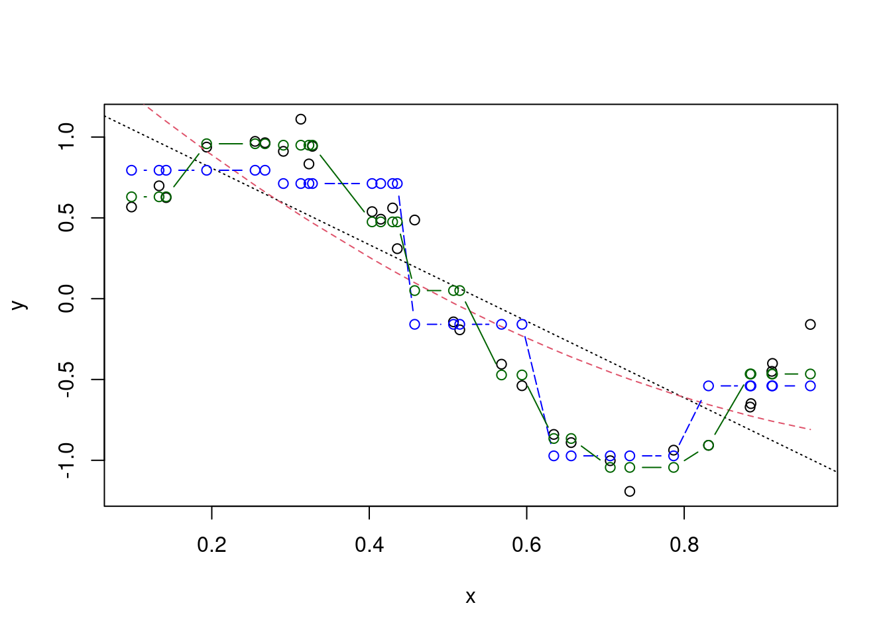
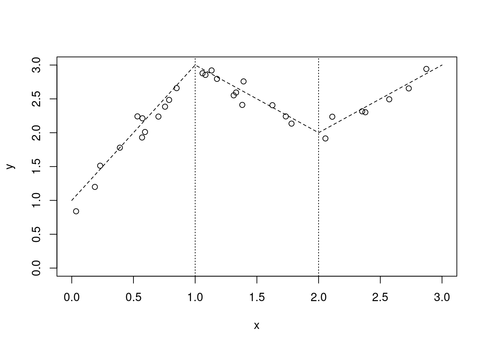

19 Nonparametric Regression
19.1 Step up
- Data: \((x_{i}, y_{i}), i = 1.,,,,n\)
- \(y_i = m(x_{i}) + \epsilon_{i}, i =1,...,n\)
- m unknown, usually continuous and smooth
- For example, \(m(x_{i}) = \beta_{0} + \beta_{1}x_{i} +\beta_{2}x_{i}^2\)
- \(\epsilon_i\) iid from a continuous distribution, \(E\epsilon_i = 0\)
- \(E(y_{i} \mid x_{1}) = m(x_{i})\)
19.2 Example
n=30; x=sort(runif(n,0,1)); y=sin(x*pi)+rnorm(n,0,0.1)
plot(x,y); m1=lm(y~x); abline(m1)
x2=x^2; m2=update(m1,~.+x2)
plot(x,y); abline(m1); lines(x,m2$fit,col=2)
summary(m1)##
## Call:
## lm(formula = y ~ x)
##
## Residuals:
## Min 1Q Median 3Q Max
## -0.71616 -0.24359 0.06758 0.24594 0.48140
##
## Coefficients:
## Estimate Std. Error t value Pr(>|t|)
## (Intercept) 0.64795 0.13095 4.948 3.2e-05 ***
## x 0.08651 0.22398 0.386 0.702
## ---
## Signif. codes: 0 '***' 0.001 '**' 0.01 '*' 0.05 '.' 0.1 ' ' 1
##
## Residual standard error: 0.342 on 28 degrees of freedom
## Multiple R-squared: 0.0053, Adjusted R-squared: -0.03022
## F-statistic: 0.1492 on 1 and 28 DF, p-value: 0.7022summary(m2)##
## Call:
## lm(formula = y ~ x + x2)
##
## Residuals:
## Min 1Q Median 3Q Max
## -0.166123 -0.053245 0.005157 0.056727 0.185725
##
## Coefficients:
## Estimate Std. Error t value Pr(>|t|)
## (Intercept) -0.04444 0.04656 -0.954 0.348
## x 4.32840 0.21207 20.410 <2e-16 ***
## x2 -4.35165 0.20998 -20.724 <2e-16 ***
## ---
## Signif. codes: 0 '***' 0.001 '**' 0.01 '*' 0.05 '.' 0.1 ' ' 1
##
## Residual standard error: 0.08471 on 27 degrees of freedom
## Multiple R-squared: 0.9412, Adjusted R-squared: 0.9368
## F-statistic: 216 on 2 and 27 DF, p-value: < 2.2e-16y=sin(x*pi*2)+rnorm(n,0,0.1); plot(x,y); m1=lm(y~x); abline(m1,lty=3)
m2=update(m1,~.+I(x^2));plot(x,y); abline(m1,lty=3);
lines(x,m2$fit,col=2,lty=2)
range(x); cx5=cut(x,5); levels(cx5);## [1] 0.02791506 0.99661324## [1] "(0.0269,0.222]" "(0.222,0.415]" "(0.415,0.609]" "(0.609,0.803]"
## [5] "(0.803,0.998]"cx5=cut(x,5,include.lowest=T); levels(cx5)## [1] "[0.0269,0.222]" "(0.222,0.415]" "(0.415,0.609]" "(0.609,0.803]"
## [5] "(0.803,0.998]"m3=lm(y~cx5);
summary(m3)$coef## Estimate Std. Error t value Pr(>|t|)
## (Intercept) 0.6211089 0.09190806 6.757937 4.403900e-07
## cx5(0.222,0.415] 0.2874353 0.16780039 1.712960 9.909708e-02
## cx5(0.415,0.609] -0.7964956 0.12585029 -6.328913 1.266533e-06
## cx5(0.609,0.803] -1.5348934 0.12997762 -11.808905 1.012543e-11
## cx5(0.803,0.998] -1.1562994 0.14238335 -8.121030 1.785084e-08tapply(y,cx5,mean)## [0.0269,0.222] (0.222,0.415] (0.415,0.609] (0.609,0.803] (0.803,0.998]
## 0.6211089 0.9085441 -0.1753867 -0.9137846 -0.5351906plot(x,y); abline(m1,lty=3); lines(x,m2$fit,col=2,lty=2)
lines(x,m3$fit,col="blue",lty=5,type="b")
cx10=cut(x,10,include.lowest=T); m4=update(m3,~cx10)
plot(x,y); abline(m1,lty=3); lines(x,m2$fit,col=2,lty=2)
lines(x,m3$fit,col="blue",lty=5,type="b");
lines(x,m4$fit,col="darkgreen",lty=1,type="b")
19.2.1 Nearest Neighborhood method
- Local averaging
- Local linear regression
19.3 Example
library(KernSmooth); data(geyser, package = "MASS")## KernSmooth 2.23 loaded
## Copyright M. P. Wand 1997-2009xis=geyser$duration; yis=geyser$waiting
plot(xis, yis,xlab="Duration",ylab="Waiting",las=1)
fit1=ksmooth(xis, yis, bandwidth = 0.5); lines(fit1,col=2)
fit2=ksmooth(xis, yis,band= 1);lines(fit2,col=4)
fit3=ksmooth(xis, yis,band= 5);lines(fit3,col=3)
19.4 Local linear estimator
19.5 Local polynomial estimator
19.6 Example
est=locpoly(xis, bandwidth = 0.25); do=density(xis);
hist(xis,prob=T,ylim=c(0,0.6),xlim=range(est$x,xis,do$x),las=1)
lines(est$x,est$y); lines(do$x,do$y,col=2)plot(xis, yis,xlab="Duration",ylab="Waiting",las=1)
fit1=locpoly(xis, yis, degree=1,band= 0.25); lines(fit1,col=2)
fit2=locpoly(xis, yis, degree=2,band= 0.25);lines(fit2,col=4)
fit3=locpoly(xis, yis, degree=2,band= 0.5);lines(fit3,col=3)